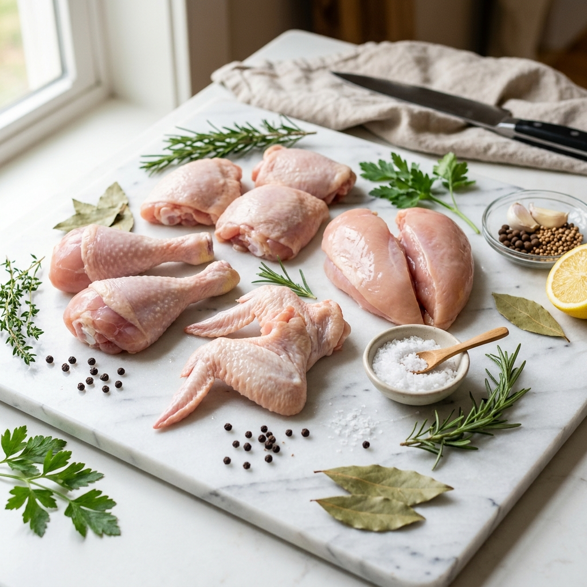
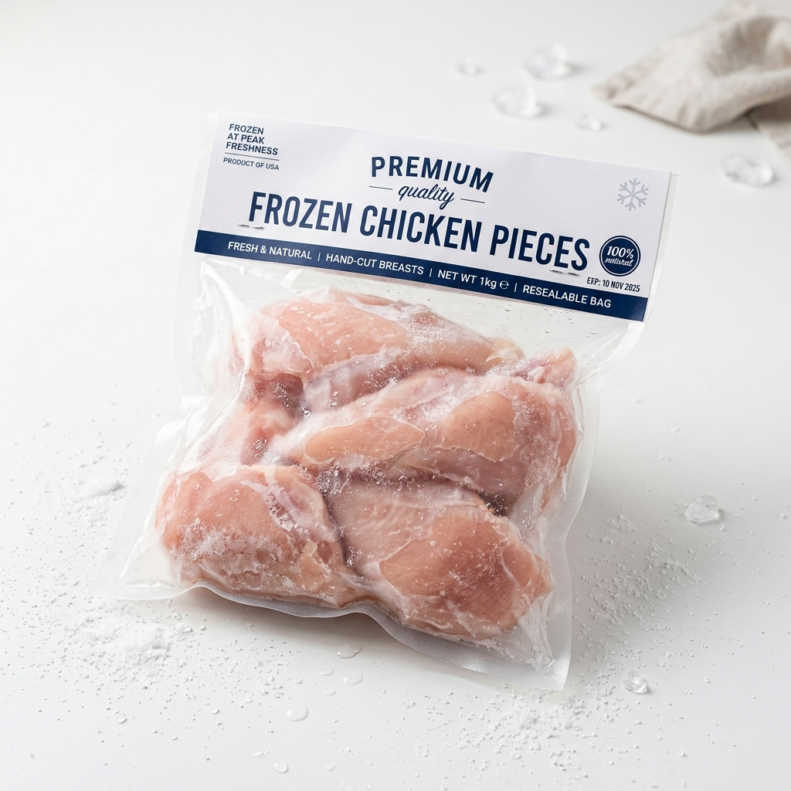

Ayam dan Bebek ungkep bumbu kuning kaya rempah. Dimasak sempurna, dikemas vacuum higienis. Solusi makan enak tanpa repot masak di dapur!

Menggunakan ayam potong segar pilihan yang diungkep perlahan dengan bumbu rempah tradisional berlimpah. Bumbunya dijamin meresap sampai ke tulang. Tinggal langsung digoreng dan nikmati wanginya!

Daging bebek yang terkenal alot menjadi sangat empuk dan lembut berkat metode masak presto khusus dari kami. Bumbunya sangat wangi, gurih, dan dijamin tidak amis sama sekali.
Tidak perlu repot meracik bumbu, siapa saja bisa memasak lauk seenak restoran di rumah.
Keluarkan ayam/bebek dari freezer. Diamkan di suhu ruang sekitar 30-45 menit hingga daging tidak lagi beku.
Panaskan minyak. Goreng ayam/bebek dengan api sedang selama 3-5 menit saja hingga berwarna kuning keemasan.
Tiriskan minyak, lalu sajikan hangat bersama nasi putih panas dan sambal kesukaan keluarga Anda.